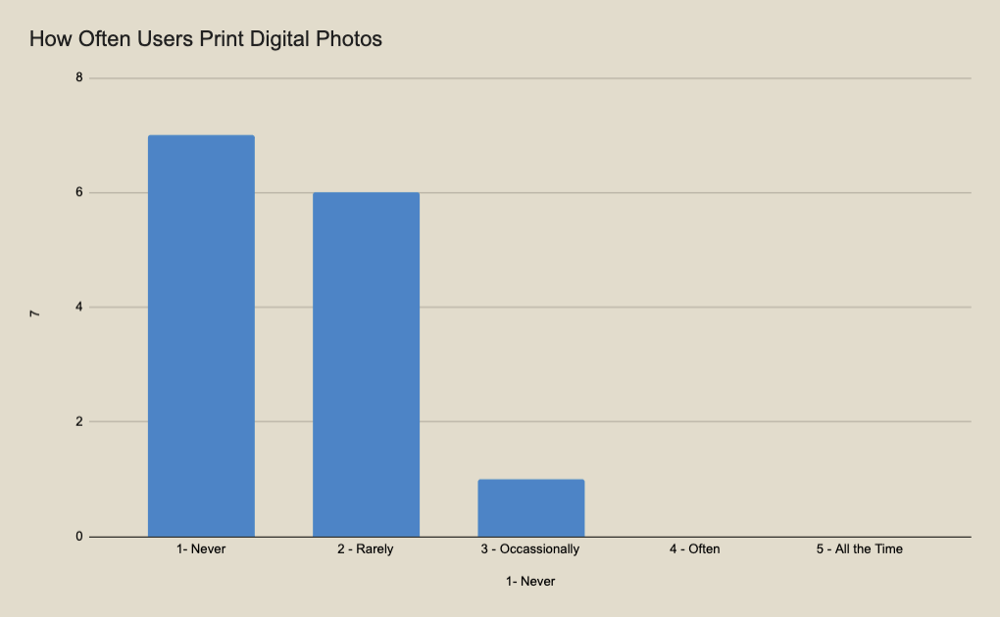
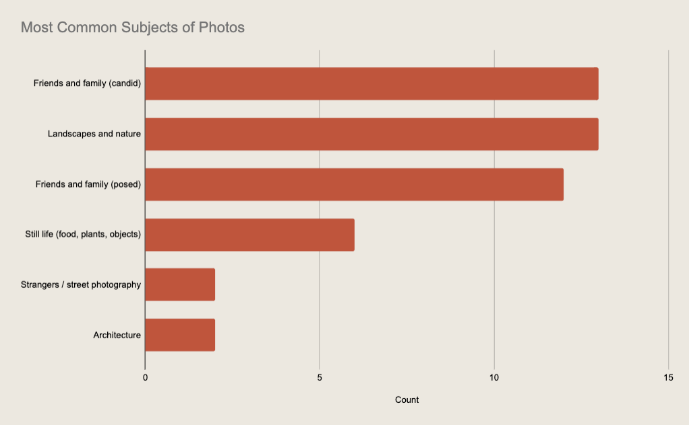
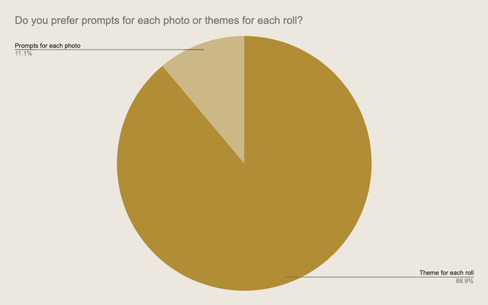

To inform my design choices throughout this capstone, I conducted user research to further understand my target audience and their pain points, priorities, and preferred formats for a guided or prompted photography journey. To do this, I organized my research into three categories: asking participants about their experience taking digital photos, taking film photos, and their preferences specific to the product and concept.
Users currently have an average of 14,721 photos on their phones. However, 93% never or rarely get prints of their photos.
When asked about their experience shooting digital photos, participants noted:
"I think you lose a bit of the quality for the quantity and ease. These photos can also feel more generic and less intentional."
"Sometimes the opportunity to capture every moment as many times you would like ends up taking away from the moment!"
"There’s such little connection to the photo. They are all so disposable and unlimited that you don’t ever really have a memory associated with it."
"I like the ease of something in my pocket, intuitive focusing, etc."
"I don't remember to look back at them. The sheer number of them is overwhelming. I have to sort through ten copies to find the best one."
"Can edit them straight then and there. Don't feel pressure to make them perfect. Rapid fire. Snap things that I think I may want or need later, but no consequence if I don't."
"It becomes mindless and going through photos can feel like a chore because of how cluttered my photo app is"
"I feel less creative with them! Because I always have my phone on me, I often forget to take meaningful pictures."
When asked about their experience shooting Film photos, participants noted:
"I enjoy the anticipation of developing photos to see how they really captured the moment. It’s a framed, surprise memory."
"I like the intention behind taking a film photo, I’m often more thoughtful about the shot because I only have so many pics on a roll."
"I often become SO selective with my limited frames that I don't end up taking pictures that I later wish I had."
"I love the look of film and in contrast to the convenience of my phone, it forces me to slow down and really think about what I’m shooting."
"I enjoy the delicacy of playing with light. The surprise when film gets developed."
"...since I don't get the immediate feedback to know if a shot turned out "perfectly" (or, honestly, at all), I tend to take a mental snapshot of the moment as well, just for myself. That mentality has actually helped me be more present in the moment."
"I wish I felt more confident adjusting the exposure settings on my camera. I love the idea of shooting film, but half the time my photos turn out poorly."
"It feels more intentional than digital. It is more in the moment and requires more thought about what goes into each photo."
"I also really love photo books. It’s very nostalgic to visiting my grandparents and going through baskets full of photo books that captured my family’s childhood. I like having a Time Capsule for others to explore."
Thinking of what themed prompts would be most in demand, I was curious about the types of photos users typically enjoy taking. Participants typically take photos of their friends and family, as well as landscapes and nature.
With thoughts of a potential subscription service, I was also curious about how frequently participants shot and developed their rolls of film. Most reported taking 2-4 rolls of photos last year.
In my final survey section, I asked participants to weigh in on preferences and formats specific to my capstone concept, ISO Film Co.
When asked if users would prefer prompts for each photo frame or themes for each roll, users strongly preferred themes for the whole roll. In this way, they could keep a concept in mind and train their eye to look for shots throughout the roll.
Users were more torn on whether they preferred specific prompts that would focus on the subject of a photo, or abstract prompts focused on the feeling or emotion of a photo. Based on this feedback, I opted to offer a mix of both, but skew towards more abstract and conceptual prompts.
When I started my research, I had ideas for both a hybrid-digital experience (where prompts would be delivered via an app, random prompt generator, or to embed QR code to prompt within the packaging) and a purely analog experience (such as each order coming with a journal, a photo album, a zine guide, or to embed printed prompt within the packaging).
Feedback from my user group heavily favored keeping the experience analog – the point would be to put your phones away and be present in the moment.
Breaking down the question further, a zine or embedded prompt within the packaging were the favored formats, though several liked the idea of an album they could put prints in later.